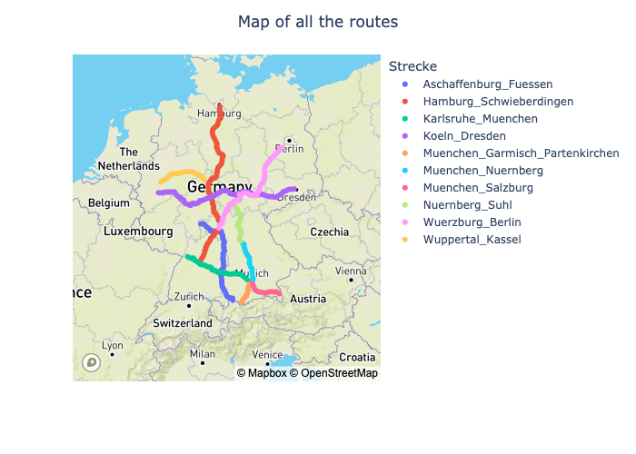
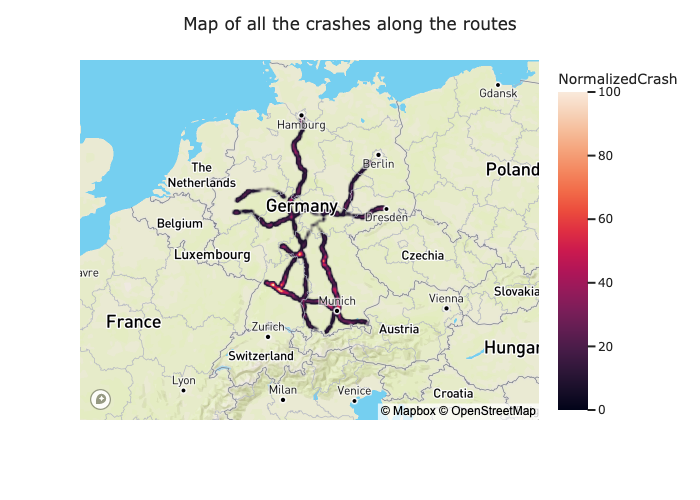
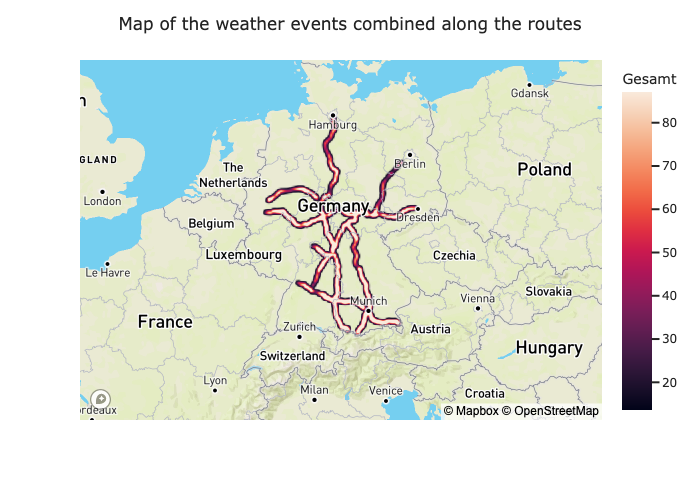
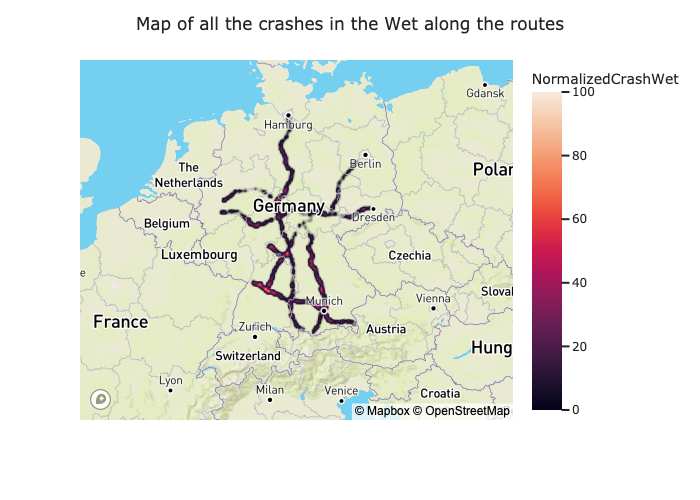
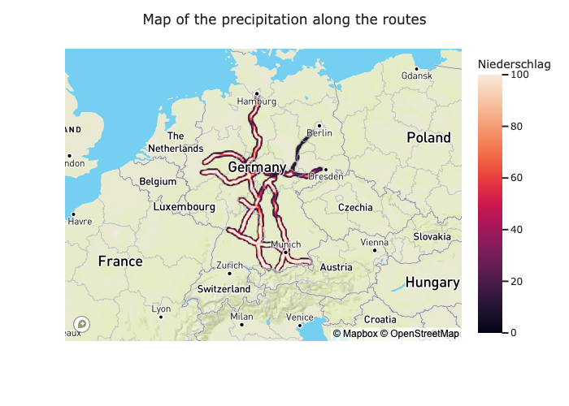
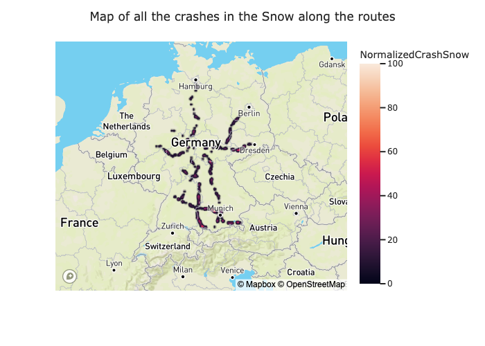
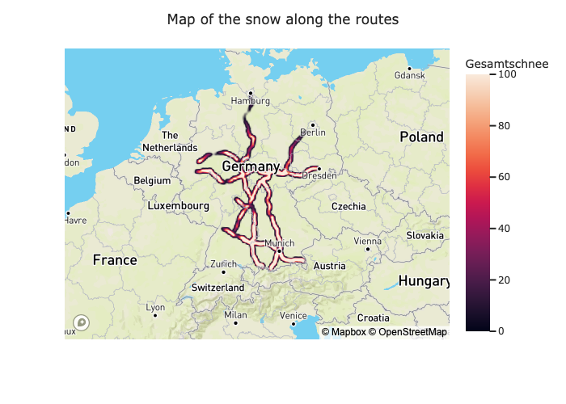
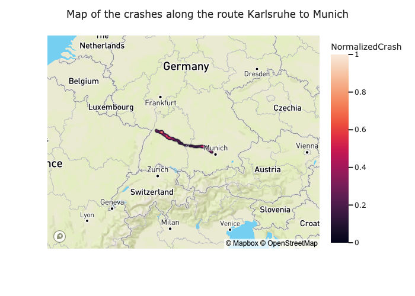
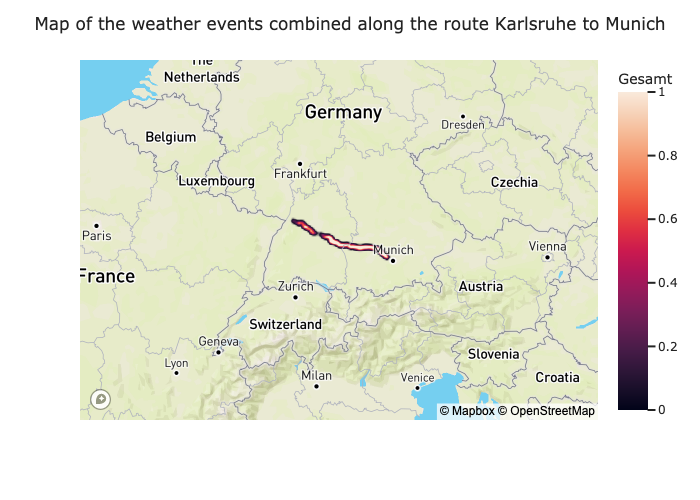

import pandas as pd
import matplotlib.pyplot as plt
import plotly.graph_objects as go
import plotly.express as px
from plotly.subplots import make_subplots
import os
import seaborn as sns
import matplotlib.pyplot as plt
from sklearn.ensemble import RandomForestRegressor
data = pd.read_sql_table('weatherCrashData', 'sqlite:///final_report_data.sqlite')
data_per_route = pd.read_sql_table('weatherCrashDataNormalized', 'sqlite:///final_report_data.sqlite')
data_per_route.rename(columns={'SmoothedCrash': 'Crash'}, inplace=True)
def locationMap(df, color, title, zoom=4):
fig = px.scatter_mapbox(df, lat='Latitude',
lon='Longitude',
color=color,
size_max=8,
zoom=zoom,
height=500,
hover_data={'Latitude': False, 'Longitude': False, 'Strecke': True, 'Kilometer': True},
center={'lat': df['Latitude'].mean(), 'lon': df['Longitude'].mean()})
fig.update_layout(mapbox_style='outdoors', mapbox_accesstoken='pk.eyJ1IjoibGlmZW9mZmVsaXh0IiwiYSI6ImNsaXQ2aHB6ZzBsc2ozcW96MjdvZmc3azIifQ.N5nMWySGLLJcjh0Ha1e9CA')
fig.update_layout(title_text=title, title_x=0.5)
return fig
def densityMap(df, z, title, zoom=4):
fig = px.density_mapbox(df, lat='Latitude',
lon='Longitude',
z=z,
radius=3,
zoom=zoom,
height=500,
hover_data={'Latitude': False, 'Longitude': False, 'Strecke': True, 'Kilometer': True},
center={'lat': df['Latitude'].mean(), 'lon': df['Longitude'].mean()},
template='seaborn')
fig.update_layout(mapbox_style='outdoors', mapbox_accesstoken='pk.eyJ1IjoibGlmZW9mZmVsaXh0IiwiYSI6ImNsaXQ2aHB6ZzBsc2ozcW96MjdvZmc3azIifQ.N5nMWySGLLJcjh0Ha1e9CA')
fig.update_layout(title_text=title, title_x=0.5)
return fig
def correlationPlot(df, columns_to_exclude, title):
# Select only the columns of interest
selected_columns = [col for col in df.columns if col not in columns_to_exclude]
# Calculate the correlation matrix
corr_matrix = df[selected_columns].corr()
# Plot the correlation matrix
plt.figure(figsize=(10, 8))
sns.heatmap(corr_matrix, annot=True, cmap='coolwarm', fmt='.2f')
plt.title(title)
return plt, corr_matrix
def linePlot(df, x, y, title, x_title, y_title):
fig = px.line(df, x=x, y=y, title=title, template='seaborn')
fig.update_layout(xaxis_title=x_title, yaxis_title=y_title)
fig.update_layout(legend=dict(
title=''
))
return fig
if not os.path.exists('images'):
os.mkdir('images')
def save_image(fig, name):
location = os.path.join('images', name)
if not os.path.exists(location):
fig.write_image(location)Does Weather has an significant impact on the number of highway traffic accidents?
Summary
Analysis of weather events on German highways and accidents in 2018-19.
Rationale
It analyses whether highway segments that are particularly exposed to extreme weather events result in more car crashes than usual.
Datasources
Highway Weather Data
- Metadata: URL
- Data: URL
- Data Type: CSV
- Description: Weather events on specific routes were studied using reanalysis data from all of Germany from Dec. 1, 2017-Nov. 30, 2019. The weather values of 3160 points with 1 km distance were read from the data and averaged or summed up, depending on the parameter. The values were normalized and the highest was given the value 100, the lowest the value 0.
CrashData
- Metadata: URL
- Data: 2017 2018 2019
- Data Type: ZIP/CSV
- Description: Road traffic accident data of 2017 to 2019 of Germany.
Transformations
- Preporcessing of the weather data
- Give each weather measure point a unique ID
- As the measure points are distributed one kilometer apart from each other, each points gets an kilomter marker
- Preprocessing of the crash data
- Dropping rows with irrelevant data (turn accidents, bike accidents, etc.)
- Drop columns with irrelevant data
- Connect the crash data with the weather data
- For each crash, find the closest weather measure point (Treshold: 600m)
- Drop rows where no point is within the treshold
- If there are multiple points within the treshold, select the one closest
- Merge crash data to the weather data
- For each crash, find the closest weather measure point (Treshold: 600m)
- Normalize the combined data per Route
Analysis of all routes combined
During the first analysis all routes are looked at. The first map shows the location of the routes. The second map shows the number of crashes per kilometer normalized. The third map shows the normalized weather events per kilometer. The higher the number the more and severe weather events occured.

Crashes of all routes

Weather of all routes

It can be seen that the number of crashes is higher in the south of Germany. The weather events are also more severe in the south. My hypothesis is that the weather events have an impact on the number of crashes. Therefore a correlation analysis is performed.
Correlation Analysis
# List of columns to exclude from correlation calculation
columns_to_exclude = ['index','Strecke', 'StreckeID', 'Kilometer', 'Count', 'CrashCount', 'CrashCountWet', 'CrashCountSnow', 'CrashCountWetSnow','Latitude', 'Longitude', 'NormalizedCrashWet', 'NormalizedCrashSnow', 'NormalizedCrashWetSnow'] # Add the column names you want to exclude
plt, corr_matrix = correlationPlot(data, columns_to_exclude, 'Correlation Matrix')
plt.show()
The correlation matrix shows that there are following weather events that have a high correlation with the number of crashes:
# Find the column(s) with the highest correlation coefficient(s)
highest_corr = corr_matrix['NormalizedCrash'].abs().nlargest(5)
top_weather_phenomena = highest_corr.index[1:]
list(top_weather_phenomena)['Windböen', 'Wind', 'Gesamt', 'Niederschlag']It is interesting that the number of crashes is not strongly correlated with the number of weather events. Further it is interesting that the top correlated weather events are ‘Windböen’ and ‘Wind’ which are both related to wind, and these are correlated negativly. Which means that the more wind there is on a highway, the less crashes happen. This is counterintuitive. One possible reason for that is that people drive more carefully when there is more wind, but this is speculation.
The only positive correlation is with ‘Niederschlag’ which means that the more precipitation there is, the more crashes happen. This seams reasonable.
Feature Importance
A further analyis is the feature importance of a Random Forest Regressor which tries to predict how likely a crash is based on the weather input.
# List of columns to exclude from correlation calculation
columns_to_exclude = ['index','Strecke', 'StreckeID', 'Kilometer', 'Count', 'CrashCount', 'CrashCountWet', 'CrashCountSnow', 'CrashCountWetSnow','Latitude', 'Longitude', 'NormalizedCrash', 'NormalizedCrashWet', 'NormalizedCrashSnow', 'NormalizedCrashWetSnow']
# Select only the columns of interest
selected_columns = [col for col in data.columns if col not in columns_to_exclude]
X = data[selected_columns]
y = data['NormalizedCrash']
# Create a random forest regressor
rf = RandomForestRegressor()
# Train the model
rf.fit(X, y)
# Get feature importances
importances = rf.feature_importances_
# Create a dataframe to store feature importances
feature_importance_df = pd.DataFrame({'Feature': X.columns, 'Importance': importances})
# Sort the feature importances
feature_importance_df = feature_importance_df.sort_values('Importance', ascending=False)
# Plot the feature importances
plt.figure(figsize=(10, 6))
sns.barplot(x='Importance', y='Feature', data=feature_importance_df)
plt.title('Feature Importances')
plt.xlabel('Importance')
plt.ylabel('Feature')
plt.show()
In a random forest regressor model the weather effect which is most important for predicting the likelihood of a crash is ‘Black Ice’. Which can be reasonable as Driver may get suprised by ice on the road. Sadly there no way to filter the crash data for accidents that occur due to Ice. This is also true for the second most important feature ‘Windböen’. Overall it can be said that none of these feature sticks out significantly. As ‘Niederschlag’ is one feature that the crash data can be filtered for, this is done in the next step.
Analysis of crashes during precipitation
To explore this further the data is filtered for crashes that happened during or due to precipitation. The following map shows the location of crashes in the wet. The secod map shows the precipitation along the routes.

Precipitation Map

When you overlay the maps in your mind you can see that they are kind of similar. Areas where less precipitation is measured have less crashes and areas with more precipitation have more crashes. This is not a strong correlation but it is visible. In the following the correlation is calculated between all relevant .
Correlation Analysis of wet weather crashes
# List of columns to exclude from correlation calculation
columns_to_exclude = ['index','Strecke', 'StreckeID', 'Kilometer', 'Count', 'CrashCount', 'CrashCountWet', 'CrashCountSnow', 'CrashCountWetSnow','Latitude', 'Longitude', 'NormalizedCrash', 'NormalizedCrashSnow', 'NormalizedCrashWetSnow'] # Add the column names you want to exclude
plt, corr_matrix = correlationPlot(data, columns_to_exclude, 'Correlation Matrix of precipitation crashes')
plt.show()
There is not much difference to the correlation matrix of all crashes. The only difference is that the correlation between ‘Niederschlag’ and ‘NormalizedCrashWet’ is higher. Which seems obvious.
# Find the column(s) with the highest correlation coefficient(s)
highest_corr = corr_matrix['NormalizedCrashWet'].abs().nlargest(5)
top_weather_phenomena = highest_corr.index[1:]
list(top_weather_phenomena)['Windböen', 'Wind', 'Niederschlag', 'Nebel']Analysis of crashes due to snow
Another kind of precipitation is snow. It is investigated because the crash data can be filtered for crashes that happened during or due to snow. The following map shows the location of crashes due of snow. The second map shows the snow along the routes.

Snow Map

When you overlay the maps in your mind you can see that they are kind of similar. Areas where less snow is measured have less crashes and areas with more snow have more crashes. This is not a strong correlation but it is visible. In the following the correlation is calculated between all relevant.
Correlation Analysis
# List of columns to exclude from correlation calculation
columns_to_exclude = ['index','Strecke', 'StreckeID', 'Kilometer', 'Count', 'CrashCount', 'CrashCountWet', 'CrashCountSnow', 'CrashCountWetSnow','Latitude', 'Longitude', 'NormalizedCrash', 'NormalizedCrashWet', 'NormalizedCrashWetSnow'] # Add the column names you want to exclude
plt, corr_matrix = correlationPlot(data, columns_to_exclude, 'Correlation Matrix of snow crashes')
plt.show()
There is not much difference to the correlation matrix of all crashes. The only difference is that the correlation between ‘Gesamtschnee’ and ‘Neuschnee’ and ‘NormalizedCrashSnow’ is higher. Which seems obvious.
# Find the column(s) with the highest correlation coefficient(s)
highest_corr = corr_matrix['NormalizedCrashSnow'].abs().nlargest(5)
top_weather_phenomena = highest_corr.index[1:]
list(top_weather_phenomena)['Neuschnee', 'Gesamtschnee', 'Black Ice', 'Gesamt']Analysis of one route with relativ high crash occurence (Karlsruhe - Munich)
When you look at the map of all crashes you can see that there is one route with a relativ high crash occurence. This route is the A8 from Karlsruhe to Munich. In the following the crashes on this route are analyzed in more detail.

Weather Map

When you compare the two maps it is visible that in areas with more (severe) weather events less crashs happen. This is an indicator for the fact that the weather events are not the main reason for the crashes and that the correlation seems to be negative. In the following the correlation is calculated between all relevant features is calculated.
Karlsruhe - Munich Correlation Analysis
# List of columns to exclude from correlation calculation
columns_to_exclude = ['index','Strecke', 'StreckeID', 'Kilometer', 'Count', 'CrashCount', 'CrashCountWet', 'CrashCountSnow', 'CrashCountWetSnow','Latitude', 'Longitude', 'NormalizedCrashWet', 'NormalizedCrashSnow', 'NormalizedCrashWetSnow', 'Crash', 'SmoothedCrashWet', 'SmoothedCrashSnow', 'SmoothedCrashWetSnow'] # Add the column names you want to exclude
plt, corr_matrix = correlationPlot(data_per_route[data_per_route['Strecke'] == 'Karlsruhe_Muenchen'], columns_to_exclude, 'Correlation Matrix')
plt.show()
The correlation matrix shows that there are following weather events that have a high correlation with the number of crashes:
# Find the column(s) with the highest correlation coefficient(s)
highest_corr = corr_matrix['NormalizedCrash'].abs().nlargest(5)
top_weather_phenomena = highest_corr.index[1:]
list(top_weather_phenomena)['Nebel', 'Gesamt', 'Neuschnee', 'Gesamtschnee']As suspected the correlation is negative. This means that the more weather events happen the less crashes happen. This is an indicator that the weather events are not the main reason for the crashes. Furthere analysis on filtered data after wet and snow crashes are not done because the correlation is negative and the weather events are not the main reason for the crashes.
Karlruhe to Munich Weather Events and Crashes per Kilometer
The final analysis is done by looking at the weather events and crashes per kilometer. This is done to see if there are areas with more weather events and crashes. Especially the weather Events ‘Gesamt’, ‘Niederschlag’, ‘Gesamtschnee’ and ‘Wind’ are analyzed.
fig_10 = linePlot(data_per_route[data_per_route['Strecke'] == 'Karlsruhe_Muenchen'], 'Kilometer', ['Crash','Gesamt', 'Niederschlag', 'Gesamtschnee', 'Wind'], 'Crash and Weather Events per Kilometer', 'Kilometer', '')
fig_10.show()The graph underlines the negative correlation between weather events and crashes. The more weather events happen the less crashes happen.
Conclusion
The analysis investigates whether highway segments exposed to extreme weather events lead to more car crashes. Here are the key findings:
- Initial Analysis:
- The number of crashes is higher in the south of Germany, where severe weather events also occur more frequently.
- Correlation Analysis:
- The correlation between the number of crashes and weather events is not strong.
- Wind-related events are negatively correlated with crashes, indicating that more wind on the highway is associated with fewer crashes.
- ‘Niederschlag’ (precipitation) shows a positive correlation, meaning that more precipitation leads to more crashes.
- Random Forest Regressor:
- ‘Black Ice’ and ‘Windböen’ are the most important weather factors for predicting crash likelihood.
- None of the features stand out significantly in predicting crash likelihood.
- Analysis of Wet Conditions:
- Areas with more precipitation tend to have more crashes, but the correlation is not strong.
- Analysis of Snow Conditions:
- Areas with more snow tend to have more crashes, but the correlation is not strong.
- Analysis of A8 Route (Karlsruhe - Munich):
- The A8 route shows a relatively high occurrence of crashes.
- Contrary to expectations, areas with more severe weather events on this route have fewer crashes.
- There is a negative correlation between weather events and crashes on this particular route.
- Weather events may not be the primary cause of crashes on the A8 route.
In summary, the analysis does not strongly support the hypothesis that highway segments exposed to extreme weather events result in more car crashes. The correlation analysis and specific route analysis suggest that weather events may not be the main contributing factor to the observed crashes.